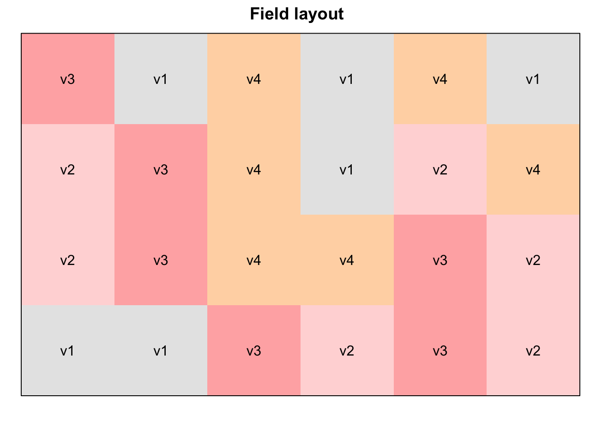
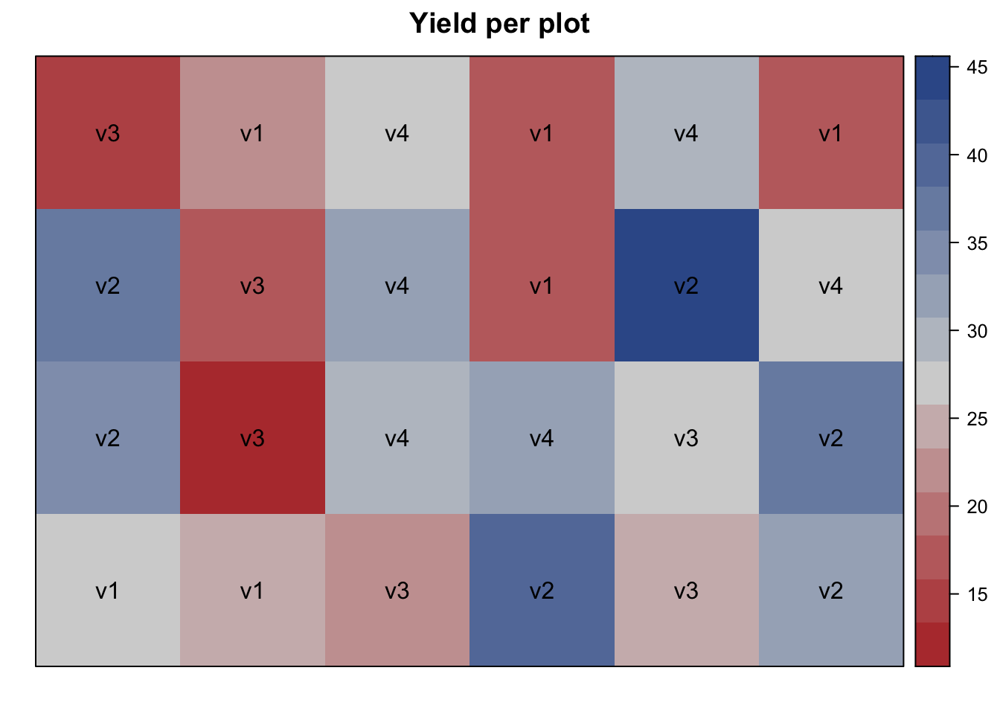
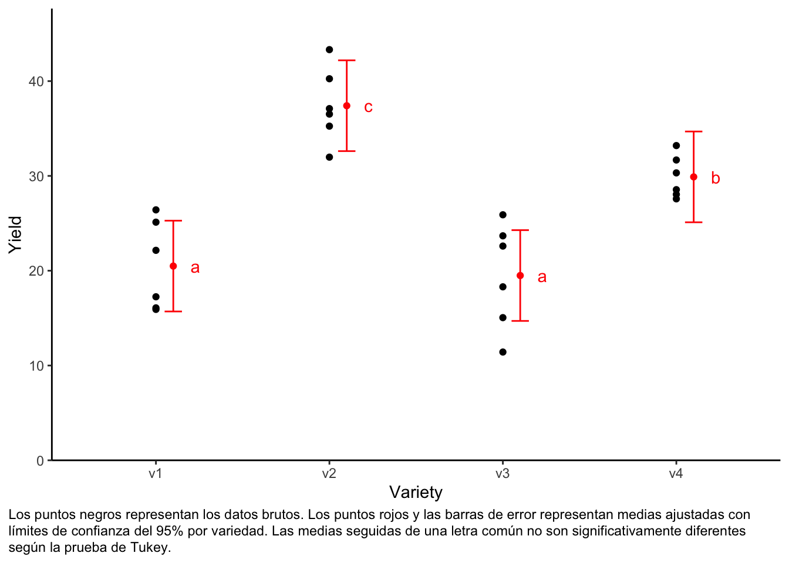
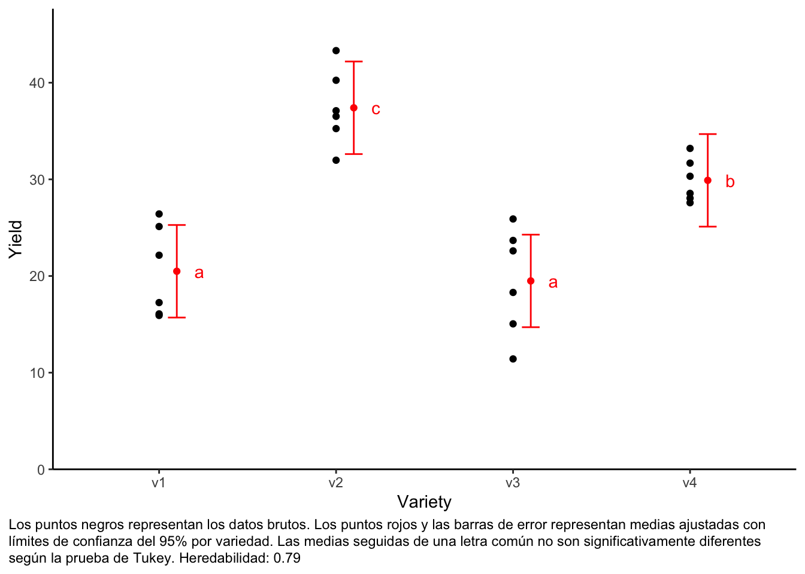

[conflicted] Will prefer dplyr::filter over any other package.
conflicts_prefer(dplyr::select)
[conflicted] Will prefer dplyr::select over any other package.
Base de datos
Este ejemplo procede del “Ejemplo 4.3” del material didáctico “Métodos cuantitativos en biociencias (3402-420)” del Prof. Dr. Hans-Peter Piepho. Considera los datos publicados en la p.52 de Mead, Curnow, y Hasted (2002) de un ensayo de rendimiento con melones. El ensayo tenía 4 variedades de melón (variedad). Cada variedad se probó en seis parcelas de campo. La asignación de los tratamientos (variedades) a las unidades experimentales (parcelas) fue completamente al azar. Así, el experimento se planteó como un diseño completamente aleatorizado (DCA).
# data is available online:path <-"https://raw.githubusercontent.com/SchmidtPaul/dsfair_quarto/master/data/Mead1993.csv"dat <-read_csv(path) # use path from above
Rows: 24 Columns: 4
── Column specification ────────────────────────────────────────────────────────
Delimiter: ","
chr (1): variety
dbl (3): yield, row, col
ℹ Use `spec()` to retrieve the full column specification for this data.
ℹ Specify the column types or set `show_col_types = FALSE` to quiet this message.
Antes de nada, la variedad de columna debe codificarse como un factor, ya que R por defecto la codifica como una variable de carácter. Hay múltiples maneras de hacer esto - aquí hay dos:
dat <- dat %>%mutate(variety =as.factor(variety))
dat <- dat %>%mutate(across(variety, ~as.factor(.x)))
Distribución de los tratamientos
Dado que se trata de un experimento que se estableció con un determinado diseño experimental (= un diseño completamente aleatorizado; DCA) - tiene sentido obtener también un plano de campo. Esto se puede hacer a través de desplot() de {desplot}:
desplot(data = dat, flip =TRUE, # row 1 on top, not on bottomform = variety ~ col + row, # fill color per varietytext = variety, # variety names per plotcex =1, # variety names: font sizemain ="Field layout", # plot titleshow.key =FALSE# hide legend )

desplot(data = dat, flip =TRUE, # row 1 on top, not on bottomform = yield ~ col + row, # fill color per varietytext = variety, # variety names per plotcex =1, # variety names: font sizemain ="Yield per plot", # plot titleshow.key =FALSE# hide legend )

Modelo
Por último, podemos decidir ajustar un modelo lineal con el rendimiento como variable de respuesta y efectos (fijos) de variedad.
mod <-lm(yield ~ variety, data = dat)
ANOVA
Basándonos en nuestro modelo, podemos realizar un ANOVA:
ANOVA <-anova(mod)ANOVA
Analysis of Variance Table
Response: yield
Df Sum Sq Mean Sq F value Pr(>F)
variety 3 1291.48 430.49 23.418 9.439e-07 ***
Residuals 20 367.65 18.38
---
Signif. codes: 0 '***' 0.001 '**' 0.01 '*' 0.05 '.' 0.1 ' ' 1
Comparación de medias
Además de un ANOVA, también se pueden comparar las medias de rendimiento ajustadas entre variedades mediante pruebas post hoc (prueba t, prueba de Tukey, etc.).
mean_comp <- mod %>%emmeans(specs =~ variety) %>%# adj. mean per varietycld(adjust ="Tukey", Letters = letters) # compact letter display (CLD)
Note: adjust = "tukey" was changed to "sidak"
because "tukey" is only appropriate for one set of pairwise comparisons
mean_comp
variety emmean SE df lower.CL upper.CL .group
v3 19.5 1.75 20 14.7 24.3 a
v1 20.5 1.75 20 15.7 25.3 a
v4 29.9 1.75 20 25.1 34.7 b
v2 37.4 1.75 20 32.6 42.2 c
Confidence level used: 0.95
Conf-level adjustment: sidak method for 4 estimates
P value adjustment: tukey method for comparing a family of 4 estimates
significance level used: alpha = 0.05
NOTE: If two or more means share the same grouping symbol,
then we cannot show them to be different.
But we also did not show them to be the same.
Tenga en cuenta que si desea ver los contrastes/diferencias individuales subyacentes entre medias ajustadas, simplemente añada details = TRUE a la sentencia cld(). Además, consulte el artículo de resumen “Visualización compacta de letras”.
Por último, podemos crear un gráfico que muestre tanto los datos brutos como los resultados, es decir, las comparaciones de las medias ajustadas que se basan en el modelo lineal.
my_caption <-"Los puntos negros representan los datos brutos. Los puntos rojos y las barras de error representan medias ajustadas con límites de confianza del 95% por variedad. Las medias seguidas de una letra común no son significativamente diferentes según la prueba de Tukey."ggplot() +aes(x = variety) +# black dots representing the raw datageom_point(data = dat,aes(y = yield) ) +# red dots representing the adjusted meansgeom_point(data = mean_comp,aes(y = emmean),color ="red",position =position_nudge(x =0.1) ) +# red error bars representing the confidence limits of the adjusted meansgeom_errorbar(data = mean_comp,aes(ymin = lower.CL, ymax = upper.CL),color ="red",width =0.1,position =position_nudge(x =0.1) ) +# red letters geom_text(data = mean_comp,aes(y = emmean, label =str_trim(.group)),color ="red",position =position_nudge(x =0.2),hjust =0 ) +scale_x_discrete(name ="Variety" ) +scale_y_continuous(name ="Yield",limits =c(0, NA),expand =expansion(mult =c(0, 0.1)) ) +theme_classic() +labs(caption = my_caption) +theme(plot.caption =element_textbox_simple(margin =margin(t =5)),plot.caption.position ="plot")

Para calcular la heredabilidad y los Best Linear Unbiased Estimators (BLUE) en R, puedes seguir los pasos que se detallan a continuación. Utilizaremos el paquete lme4 para ajustar un modelo de efectos mixtos y obtener las estimaciones necesarias.
Cálculo de la Heredabilidad
La heredabilidad en sentido amplio se puede estimar como la proporción de la varianza genética (entre variedades) sobre la varianza total (varianza genética + varianza residual). Para esto, ajustaremos un modelo mixto donde la variedad se considere como un efecto aleatorio.
Cálculo de BLUEs
Los BLUEs se obtienen cuando tratamos los efectos de la variedad como fijos en un modelo lineal. En el contexto del diseño completamente aleatorizado (DCA), los BLUEs son simplemente las medias ajustadas (predicciones) para cada variedad.
Ejemplo
# Ajustar el modelo mixto para calcular la heredabilidadlibrary(lme4)mod_mixed <-lmer(yield ~ (1|variety), data = dat)# Resumen del modelo para obtener las varianzassummary(mod_mixed)
Linear mixed model fit by REML ['lmerMod']
Formula: yield ~ (1 | variety)
Data: dat
REML criterion at convergence: 144.9
Scaled residuals:
Min 1Q Median 3Q Max
-1.95560 -0.58695 -0.03299 0.77728 1.48538
Random effects:
Groups Name Variance Std.Dev.
variety (Intercept) 68.68 8.288
Residual 18.38 4.288
Number of obs: 24, groups: variety, 4
Fixed effects:
Estimate Std. Error t value
(Intercept) 26.820 4.235 6.333
# Extraer las varianzas para calcular la heredabilidadvar_comp <-as.data.frame(VarCorr(mod_mixed))var_genetic <- var_comp$vcov[1] # Varianza genética (entre variedades)var_residual <- var_comp$vcov[2] # Varianza residual# Calcular la heredabilidad en sentido amplio (H^2)H2 <- var_genetic / (var_genetic + var_residual)H2
[1] 0.7888692
Calcular los BLUEs
Si la variedad es un efecto fijo, los BLUEs coinciden con las medias ajustadas obtenidas en tu código anterior. Sin embargo, si quieres obtener los BLUEs explícitamente:
# Ajustar un modelo con efectos fijos para la variedadmod_fixed <-lm(yield ~ variety, data = dat)# Obtener los BLUEsBLUEs <-emmeans(mod_fixed, ~ variety)BLUEs
Si deseas agregar la heredabilidad y los BLUEs al gráfico, puedes hacerlo de la siguiente manera:
# Calcular heredabilidad y obtener BLUEsH2 <-round(H2, 2)# Calcular los BLUEs y las letras de TukeyBLUEs <-emmeans(mod_fixed, ~ variety) %>%cld(adjust ="Tukey", Letters = letters) %>%as.data.frame()
Note: adjust = "tukey" was changed to "sidak"
because "tukey" is only appropriate for one set of pairwise comparisons
# Añadir heredabilidad como un texto en el gráficomy_caption <-paste("Los puntos negros representan los datos brutos. Los puntos rojos y las barras de error representan medias ajustadas con límites de confianza del 95% por variedad. Las medias seguidas de una letra común no son significativamente diferentes según la prueba de Tukey.\nHeredabilidad: ", H2)# Crear el gráficoggplot() +aes(x = variety) +# black dots representing the raw datageom_point(data = dat,aes(y = yield) ) +# red dots representing the adjusted meansgeom_point(data = BLUEs,aes(y = emmean),color ="red",position =position_nudge(x =0.1) ) +# red error bars representing the confidence limits of the adjusted meansgeom_errorbar(data = BLUEs,aes(ymin = lower.CL, ymax = upper.CL),color ="red",width =0.1,position =position_nudge(x =0.1) ) +# red letters geom_text(data = BLUEs,aes(y = emmean, label =str_trim(.group)),color ="red",position =position_nudge(x =0.2),hjust =0 ) +scale_x_discrete(name ="Variety" ) +scale_y_continuous(name ="Yield",limits =c(0, NA),expand =expansion(mult =c(0, 0.1)) ) +theme_classic() +labs(caption = my_caption) +theme(plot.caption =element_textbox_simple(margin =margin(t =5)),plot.caption.position ="plot")

Este código te permite visualizar las medias ajustadas junto con la heredabilidad calculada y los BLUEs.
Citation
BibTeX citation:
@online{santos2024,
author = {Santos, Franklin},
title = {Diseño {Completamente} Al {Azar}},
date = {2024-06-12},
url = {https://franklinsantosm.com/posts/dca},
langid = {en}
}
![]()